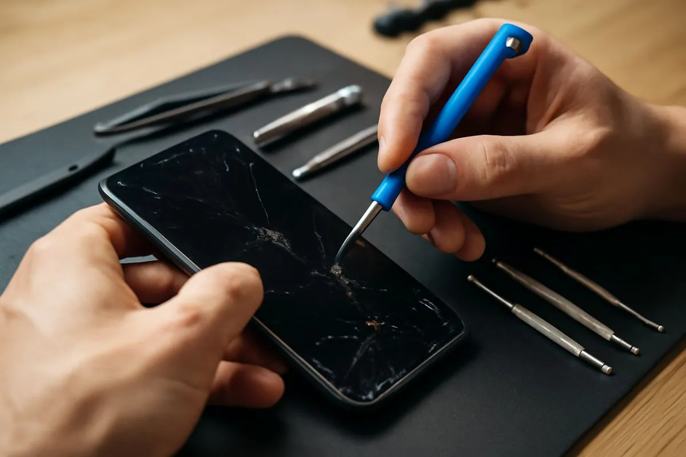
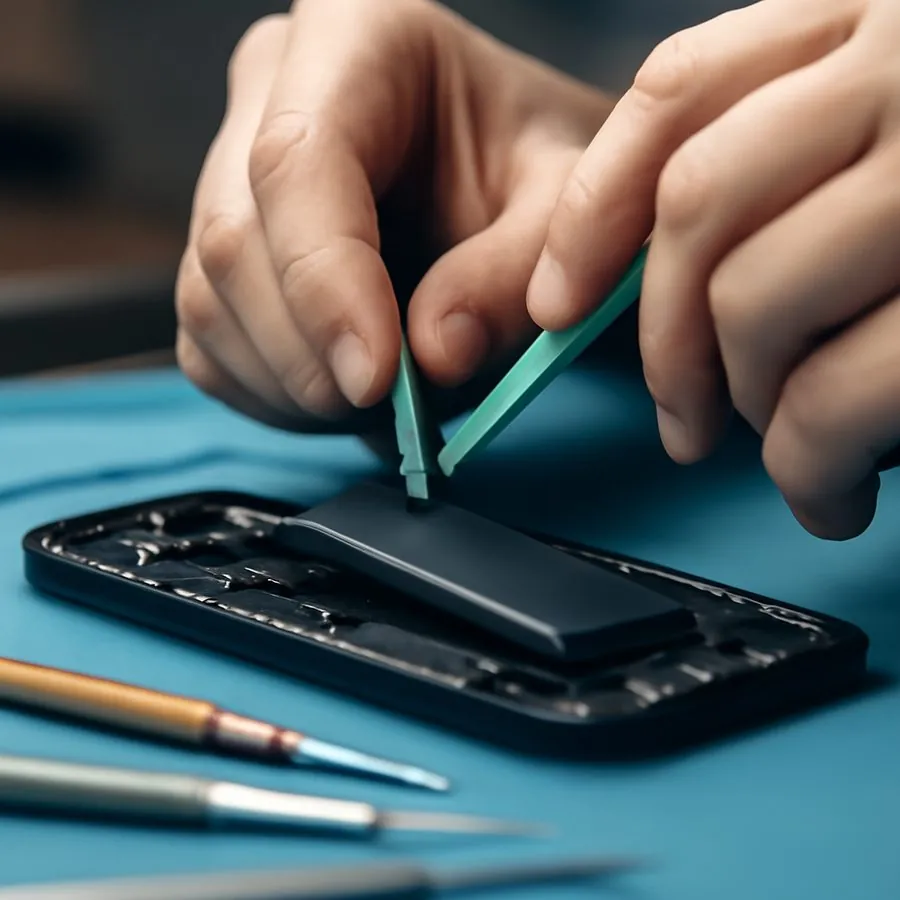

Repair Knowledge Base
บทความและคู่มือแก้ปัญหา
ข้อมูลสำหรับตรวจอาการเบื้องต้น เตรียมเครื่องก่อนซ่อม และทำความเข้าใจทางเลือกการซ่อมอย่างเหมาะสม

บทความล่าสุด
คำตอบสั้น อ่านง่าย พร้อมรายละเอียดเพื่อช่วยตัดสินใจก่อนซ่อม

iPhone 13 Pro / 14 Pro จอขาว จอเขียว
กรณีใดซ่อมวงจรจอเดิมได้ และกรณีใดต้องเปลี่ยนจอชุด

Battery Health ต่ำกว่า 80% และการย้าย BMS
ข้อดี ข้อจำกัด และสิ่งที่ควรถามก่อนเปลี่ยนแบตเตอรี่

iPad แตก: ลอกกระจกหรือเปลี่ยนจอชุด?
เลือกวิธีซ่อมให้ตรงกับภาพ ทัช และโครงสร้างของแต่ละรุ่น

MacBook จอแตก จอเป็นเส้น
วิธีแยกว่าเสียเฉพาะจอ สายแพ หรือวงจรแสดงผล

แบตเตอรี่ MacBook เสื่อม
สัญญาณเตือน วิธีเช็ก Cycle Count และการเตรียมเครื่อง

MacBook เปิดไม่ติด
ขั้นตอนแยกอะแดปเตอร์ แบตเตอรี่ และเมนบอร์ด

MacBook ชาร์จไม่เข้า
ตรวจสายชาร์จ พอร์ต USB-C และวงจรชาร์จเบื้องต้น
MacBook ค้างโลโก้ Apple
สาเหตุจากระบบ พื้นที่จัดเก็บ และอุปกรณ์ภายใน
รวมอาการเสีย MacBook
ศูนย์รวมลิงก์บริการและอาการที่พบบ่อยในแต่ละรุ่น